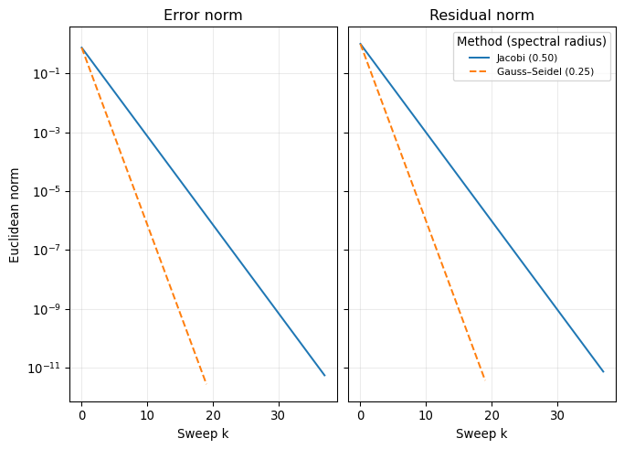

import numpy as np
import matplotlib.pyplot as plt
def jacobi(A, b, x):
return x + (b - A @ x) / np.diag(A)
def gauss_seidel(A, b, x):
y = x.copy()
for i in range(len(b)):
lower = A[i, :i] @ y[:i]
upper = A[i, i+1:] @ x[i+1:]
y[i] = (b[i] - lower - upper) / A[i, i]
return y
def history(A, b, exact, x0, sweep, max_steps, rtol=1e-11):
if np.any(np.diag(A) == 0):
raise ValueError("A diagonal entry is zero")
x = np.array(x0, dtype=float)
rows = []
threshold = 1e-14 + rtol * np.linalg.norm(b)
for k in range(max_steps + 1):
residual = np.linalg.norm(b - A @ x)
error = np.linalg.norm(x - exact)
if not np.isfinite([residual, error]).all():
raise FloatingPointError("Nonfinite history entry")
rows.append((error, residual))
if residual <= threshold:
return np.array(rows), "residual tolerance"
if k < max_steps:
y = sweep(A, b, x)
if np.array_equal(y, x):
return np.array(rows), "stagnation"
x = y
return np.array(rows), "iteration limit"9 Session 8 — Basic Iterative Methods
A factorization gives us a way to solve \(Ax=b\). An iteration poses a different design question. Can we compute an inexpensive correction from the data we have, and prove that applying it repeatedly removes an error we cannot observe?
Study route (75 minutes). Allow 12 minutes for splittings and fixed points, 10 for the two hand calculations, 15 for the convergence theorem and its guarantees, and 10 for stopping, the figure, and synthesis. Use the remaining 28 minutes for the exercises. Reading the Python implementation line by line is optional.
9.1 From a linear system to a fixed point
In Session 7, elimination reduced a system to triangular solves. Given suitable pivots, LU solves a nonsingular system in finitely many operations in exact arithmetic. Dense factorization costs order \(n^3\) operations and order \(n^2\) storage. Sparse elimination can introduce entries where the original matrix had zeros (fill-in). On a large grid, storing the factors can be a greater obstacle than storing the original equations. A sparse matrix-vector product needs work proportional to the number of stored nonzeros. A sparse triangular solve can also visit each stored coefficient once, although its rows depend on one another. The question is how many such inexpensive sweeps we need for a given accuracy.
A fixed point of a map \(F\) satisfies \(x^*=F(x^*)\). Starting with \(x^{(0)}\), evaluate \(x^{(k+1)}=F(x^{(k)})\). For continuous \(F\), any limit of the whole sequence is a fixed point, since passing to the limit gives \(x^*=F(x^*)\). Existence alone gives no assurance that the sequence approaches it.
We study stationary linear iterations. The update is affine, \(F(x)=Bx+c\), and stationary means that the same \(B\) and \(c\) are used at every sweep. The fixed-point equation is \((I-B)x=c\). It has a unique solution exactly when \(I-B\) is invertible.
Build the update by choosing an easy solve
Let \(A\in\mathbb{F}^{n\times n}\) be nonsingular, \(b\in\mathbb{F}^n\), and \(\mathbb{F}=\mathbb{R}\) or \(\mathbb{C}\). Split \(A=M-N\) with \(M\) invertible. Since \(Ax=b\) is equivalent to \(Mx=Nx+b\), evaluate the right-hand side at the current approximation and solve for the next one:
\[ Mx^{(k+1)}=Nx^{(k)}+b,\qquad x^{(k+1)}=Bx^{(k)}+c,\quad B=M^{-1}N,\quad c=M^{-1}b. \]
The identity \(I-B=M^{-1}A\) verifies consistency and uniqueness at once. Multiplying the fixed-point equation by \(M\) recovers precisely the original system. Subtracting \(Mx^{(k)}\) from both sides of the sweep gives another useful reading:
\[ r^{(k)}=b-Ax^{(k)},\qquad Md^{(k)}=r^{(k)},\qquad x^{(k+1)}=x^{(k)}+d^{(k)}. \]
Thus \(M^{-1}r^{(k)}\) approximates the exact correction \(A^{-1}r^{(k)}\). Taking \(M=A\) would give that correction in one step, at the price of solving the original problem. A more economical \(M\) changes the propagation matrix \(B=I-M^{-1}A\). In code, solve with \(M\) using its structure. Forming its inverse can destroy sparsity and adds unnecessary work.
9.2 Two choices of splitting, one system
Write \(A=D+L+U\), retaining the actual signs of entries in the diagonal, strictly lower, and strictly upper parts. Assume \(a_{ii}\ne0\) for each \(i\). This makes both \(D\) and \(D+L\) invertible. A nonsingular \(A\) can have a zero diagonal entry, so this assumption needs its own check.
Jacobi uses a snapshot
Take \(M=D\), \(N=-(L+U)\). Reading \(Dx^{(k+1)}=b-(L+U)x^{(k)}\) by rows gives
\[ B_J=-D^{-1}(L+U),\qquad c_J=D^{-1}b,\qquad x_i^{(k+1)}=\frac{b_i-\sum_{j\ne i}a_{ij}x_j^{(k)}}{a_{ii}}. \]
Every row reads the same old vector. Keep separate input and output arrays during the sweep. Rows can then be distributed across processors and the outputs become the common input for the next sweep.
Gauss–Seidel reuses a corrected component
Visit rows in order \(1,\ldots,n\). By row \(i\), the first \(i-1\) components have already been updated. Moving their terms to the left gives \((D+L)x^{(k+1)}=b-Ux^{(k)}\), hence
\[ \begin{aligned} B_{GS}&=-(D+L)^{-1}U, \qquad c_{GS}=(D+L)^{-1}b,\\ x_i^{(k+1)}&=\frac{1}{a_{ii}}\left(b_i-\sum_{j<i}a_{ij}x_j^{(k+1)}-\sum_{j>i}a_{ij}x_j^{(k)}\right). \end{aligned} \]
This is forward substitution with \(M=D+L\). One array suffices. An entry below the diagonal creates a dependency on the newly computed component. A different ordering can change the sweep and its convergence behavior.
Worked example — when does the second unknown first change?
Use the same start \(x^{(0)}=(0,0)^T\) for both methods, with
\[ A=\begin{pmatrix}2&-1\\-1&2\end{pmatrix},\qquad b=\begin{pmatrix}1\\0\end{pmatrix},\qquad x^*=\begin{pmatrix}2/3\\1/3\end{pmatrix}. \]
Write the old coordinates as \((u,v)\) and the new ones as \((u',v')\). Both methods compute \(u'=(1+v)/2\). Jacobi takes \(v'=u/2\) and Gauss–Seidel takes \(v'=u'/2=(1+v)/4\). Reading off the coefficients and constant terms gives
\[ B_J=\begin{pmatrix}0&1/2\\1/2&0\end{pmatrix},\quad c_J=\binom{1/2}{0},\qquad B_{GS}=\begin{pmatrix}0&1/2\\0&1/4\end{pmatrix},\quad c_{GS}=\binom{1/2}{1/4}. \]
| Sweep \(k\) | Jacobi \((u,v)\) | Gauss–Seidel \((u,v)\) |
|---|---|---|
| 0 | \((0,0)\) | \((0,0)\) |
| 1 | \((1/2,0)\) | \((1/2,1/4)\) |
| 2 | \((1/2,1/4)\) | \((5/8,5/16)\) |
| 3 | \((5/8,1/4)\) | \((21/32,21/64)\) |
In the first Jacobi sweep the second row still sees \(u=0\). In the first Gauss–Seidel sweep it sees \(u'=1/2\), and its equation is already satisfied at the end of the sweep. The next first-row update can disturb that equation again. To decide whether these corrections solve both equations in the limit, track an entire error vector across a sweep.
9.3 The error obeys a homogeneous equation
Use the signed error \(e^{(k)}=x^{(k)}-x^*\) throughout this session. This reverses the exact-minus-approximate convention of Session 6 and preserves all norm estimates. The solver stores \(x^{(k)}\). The vector \(x^*\) is fixed and generally unknown. We can reason about their difference because both obey the same affine rule:
\[ \begin{aligned} x^{(k+1)}&=Bx^{(k)}+c,\\ x^*&=Bx^*+c,\\ e^{(k+1)}&=B(x^{(k)}-x^*)=Be^{(k)}. \end{aligned} \]
The translation \(c\) cancels. Centered at the solution, every sweep is the same linear transformation. Applying it \(k\) times yields
\[ \boxed{e^{(k)}=B^ke^{(0)}}. \]
Since the starting guess is arbitrary, \(e^{(0)}\) ranges over the entire space. Convergence for every start therefore requires all directions to decay. For the running example, \(B_J\) swaps the coordinates and halves them, so every Euclidean error norm halves at every sweep. Meanwhile \(B_{GS}(u,v)^T=v(1/2,1/4)^T\). One sweep sends every error onto the line spanned by \((2,1)^T\), where every subsequent sweep multiplies it by \(1/4\). This advantage is specific to the system and splitting.
9.4 When do all matrix powers decay?
Convergence theorem. For any fixed finite square matrix \(B\) over \(\mathbb R\) or \(\mathbb C\) and fixed vector \(c\), the following are equivalent in exact arithmetic:
- The map \(x\mapsto Bx+c\) has a unique fixed point, and the iterates approach it for every initial vector.
- \(B^k\to0\) as \(k\to\infty\).
- \(\rho(B)=\max_{\lambda\in\sigma(B)}|\lambda|<1\), taking eigenvalues over \(\mathbb C\).
Proof. Under the first condition, choose initial errors equal to the coordinate vectors in turn. The error formula shows that every column of \(B^k\) tends to zero. In finite dimensions this implies convergence to zero in any matrix norm. Conversely, if \(B^k\to0\), the eigenvector identity \(B^kv=\lambda^k v\) forces \(|\lambda|<1\) for every eigenvalue. For real matrices the column argument also gives decay on complex vectors by linearity.
To finish, assume \(\rho(B)<1\). For diagonalizable \(B=V\Lambda V^{-1}\), cancellation of adjacent factors yields \(B^k=V\Lambda^kV^{-1}\). Each diagonal entry \(\lambda_i^k\) vanishes. For a defective matrix, take its complex Jordan form. A block \(J=\lambda I+H\) of size \(s\) has \(H^s=0\). For \(k\ge s\) its binomial expansion is
\[ J^k=\sum_{j=0}^{s-1}\binom{k}{j}\lambda^{k-j}H^j. \]
For \(0<|\lambda|<1\), exponential decay dominates every fixed polynomial factor in \(k\). A block with \(\lambda=0\) vanishes after \(s\) powers. Thus all blocks tend to zero, and conjugating back gives \(B^k\to0\). Finally \(1\) is absent from the spectrum, so \(x^*=(I-B)^{-1}c\) exists uniquely and \(x^{(k)}-x^*=B^ke^{(0)}\to0\). This completes the proof.
How fast? For diagonalizable \(B\), \(\|B^k\|_2\le\kappa_2(V)\rho(B)^k\). For normal \(B\), a unitary eigenbasis gives \(\|B^k\|_2=\rho(B)^k\). In general the asymptotic worst-case exponential factor is \(\lim_{k\to\infty}\|B^k\|^{1/k}=\rho(B)\), by the same block argument and the eigenvector lower bound. An initial error can miss a slowly decaying eigendirection. Consecutive error ratios can also vary.
A sufficient norm test. In any chosen induced norm, \(q=\|B\|<1\) gives \(\|e^{(k)}\|\le q^k\|e^{(0)}\|\) by submultiplicativity. This test can be inconclusive. For example,
\[ B=\begin{pmatrix}0&4\\0&0\end{pmatrix} \]
has \(\|B\|_2=4\) and sends \((0,1)^T\) to \((4,0)^T\) in the first step. Yet \(B^2=0\) and \(\rho(B)=0\). This nonnormal example exhibits transient amplification before complete decay. The decisive condition concerns the powers of the iteration matrix. The eigenvalues of the original \(A\) do not in general give those of \(B\).
9.5 Two guarantees that avoid computing eigenvalues
Strict row diagonal dominance. If \(|a_{ii}|>\sum_{j\ne i}|a_{ij}|\) for every row, Jacobi and forward Gauss–Seidel both converge from every start. For Jacobi the maximum absolute row sum of \(B_J\) is directly less than one. For Gauss–Seidel let \(\ell_i=\sum_{j<i}|a_{ij}|\) and \(u_i=\sum_{j>i}|a_{ij}|\). At a coordinate \(i\) attaining the maximum new error, the homogeneous row update gives
\[ (|a_{ii}|-\ell_i)\|e^{(k+1)}\|_\infty\le u_i\|e^{(k)}\|_\infty. \]
The largest of the ratios \(u_i/(|a_{ii}|-\ell_i)\) is strictly below one. Thus the entire sweep contracts. These tests are sufficient. The spectral-radius criterion is exact.
Hermitian positive definiteness. If \(A=A^*\) and \(z^*Az>0\) for all \(z\ne0\), Gauss–Seidel converges. To see why, measure error in the energy norm \(\|e\|_A^2=e^*Ae\). A row update changes one coordinate by \(t\). Along coordinate vector \(s_i\), the energy becomes
\[ \|e+t s_i\|_A^2=\|e\|_A^2+2\operatorname{Re}(\overline{t}(Ae)_i)+a_{ii}|t|^2. \]
Its unique minimizer is \(t=-(Ae)_i/a_{ii}\), exactly the current row correction. Every nonzero correction strictly decreases energy. If a full sweep makes no correction, every row of \(Ae\) was zero and \(e=0\). By continuity on the compact energy unit sphere, the maximum energy-norm ratio for a full sweep is strictly less than one. Jacobi evaluates all corrections at the old point, so this successive minimization argument does not apply.
Divergence in a uniquely solvable SPD system. Let \(w=(1,1,1)^T\), \(A=(I+3ww^T)/4\), and \(b=Aw\). The diagonal is one and every off-diagonal entry is \(3/4\). Along \(w\), \(A\) has eigenvalue \(5/2\); on \(w^\perp\) it has eigenvalue \(1/4\). Hence \(A\) is SPD and \(x^*=w\) is unique. Here \(B_J=I-A\) has eigenvalue \(-3/2\) along \(w\) and \(3/4\) on \(w^\perp\). From zero the initial error is \(-w\), so it alternates sign and grows by \(3/2\) per sweep. An initial error orthogonal to \(w\) decays by \(3/4\) instead. This system shows both the limit of the SPD guarantee for Jacobi and the importance of the words every initial guess.
9.6 What can we measure without the solution?
Since \(b=Ax^*\), our sign convention gives
\[ r^{(k)}=b-Ax^{(k)}=-Ae^{(k)},\qquad e^{(k)}=-A^{-1}r^{(k)}. \]
The residual measures how much the right-hand side must change to make the current approximation exact (the required change is \(-r^{(k)}\)). The error measures distance to the solution. In any compatible vector norm and its induced matrix norm, for \(b\ne0\),
\[ \frac{\|e^{(k)}\|}{\|x^*\|}\le \underbrace{\|A^{-1}\|\|A\|}_{\kappa(A)} \frac{\|r^{(k)}\|}{\|b\|}. \]
Here we used \(\|b\|\le\|A\|\|x^*\|\). An ill-conditioned matrix can map a large error to a small residual. Assess the requested accuracy in light of this factor.
| Diagnostic | How to use it |
|---|---|
| Absolute and relative residual | Recompute \(b-Ax^{(k)}\). Stop when its norm is at most \(\tau_{\mathrm{abs}}+\tau_{\mathrm{rel}}\|b\|\). The absolute term also handles \(b=0\). |
| Size of the last change | A small correction can signal slow progress or rounding. A verified contraction factor can turn it into an error bound. |
| Iteration budget and finite values | Report exhaustion, stagnation, or nonfinite values separately from meeting the residual tolerance. |
For a contraction with known \(q=\|B\|<1\), successive changes shrink at least geometrically since \(x^{(k+1)}-x^{(k)}=B(x^{(k)}-x^{(k-1)})\). Sum the tail from the current iterate to the limit to obtain, for \(k\ge1\),
\[ \|x^*-x^{(k)}\| \le\frac{q}{1-q}\|x^{(k)}-x^{(k-1)}\|. \]
A factor \(q\) close to one makes this certificate weak. In floating point, a computed sweep can be written as \(\widehat e^{(k+1)}=B\widehat e^{(k)}+\delta^{(k)}\), with \(\delta^{(k)}\) the local arithmetic error. Earlier perturbations propagate through powers of \(B\) and each sweep introduces a new one. Even for \(q<1\), uniformly bounded perturbations of size \(\epsilon\) contribute up to \(\epsilon/(1-q)\) to the error. Recomputing the residual also incurs rounding. Exact-arithmetic convergence establishes neither attainable accuracy nor backward stability of an implementation.
9.7 Computational experiment — predict the slopes
For the hand example, the characteristic polynomials are \(t^2-1/4\) for Jacobi and \(t(t-1/4)\) for Gauss–Seidel. Predict the two error slopes before reading the figure. The code computes the spectral radii independently and implements each sweep directly. Dense arrays keep the small experiment inspectable. The exact solution is used only for measurement.
A = np.array([[2., -1.], [-1., 2.]])
b = np.array([1., 0.])
exact = np.array([2/3, 1/3])
start = np.zeros(2)
fig, axes = plt.subplots(1, 2, sharey=True, layout="constrained")
methods = [
("Jacobi", jacobi, np.diag(np.diag(A)), "-", "C0"),
("Gauss–Seidel", gauss_seidel, np.tril(A), "--", "C1"),
]
for name, sweep, M, style, color in methods:
B = np.linalg.solve(M, M - A)
rho = max(abs(np.linalg.eigvals(B)))
values, status = history(A, b, exact, start, sweep, 80)
assert status == "residual tolerance"
# Check the sweep on a vector with both coordinates nonzero.
z = np.array([0.75, -0.25])
assert np.allclose(sweep(A, b, z), B @ z + np.linalg.solve(M, b))
label = f"{name} ({rho:.2f})"
for ax, column in zip(axes, values.T):
ax.semilogy(column, style, color=color, label=label)
for ax, title in zip(axes, ["Error norm", "Residual norm"]):
ax.set(title=title, xlabel="Sweep k")
ax.grid(True, which="major", alpha=0.25)
axes[0].set_ylabel("Euclidean norm")
axes[1].legend(title="Method (spectral radius)", fontsize=8)
plt.show()
The Jacobi curve loses a factor of two per sweep. The Gauss–Seidel curve loses a factor of four per sweep from the first updated vector onward. In this particular run even the first Gauss–Seidel error lies on the same line as the initial error. For Jacobi, the residual alternates between coordinate axes; for Gauss–Seidel its second coordinate is zero after each sweep. Both residual histories therefore have a direct interpretation in terms of the equations still violated. The straight lines here arise from the special matrices and starting vector. The nilpotent example above explains why a single sweep of another convergent method can increase the error.
Optional divergence check. Run eight sweeps on the SPD counterexample. The reported ratio is a measurement of the growing mode selected by the initial error.
w = np.ones(3)
C = (np.eye(3) + 3 * np.outer(w, w)) / 4
values, status = history(C, C @ w, w, np.zeros(3), jacobi, 8)
ratios = values[1:, 0] / values[:-1, 0]
assert np.allclose(ratios, 1.5)
print(f"{status} after 8 sweeps; error factor {ratios[-1]:.2f}")iteration limit after 8 sweeps; error factor 1.509.8 From sparse solves to spectral filtering
For large systems, the splitting gives two reusable operations: apply \(A\) and solve approximately for a correction. A few sweeps can also serve as part of a preconditioner. In multigrid, suitable relaxation methods such as weighted Jacobi can damp oscillatory error on a grid, leaving smoother components for a coarser grid. Total cost depends on both the work per sweep and the number of sweeps.
Krylov methods build approximations from a growing subspace. Starting with \(r_0=b-Ax^{(0)}\), a typical unpreconditioned approximation lies in \(x^{(0)}+\mathcal K_m(A,r_0)\), where
\[ \mathcal K_m(A,r_0)=\operatorname{span}\{r_0,Ar_0,\ldots,A^{m-1}r_0\}. \]
Here the choice of approximation can adapt as the space grows. In our stationary methods the error polynomial in \(B\) is already prescribed: \(p_k(t)=t^k\).
Session 9 reuses the calculation \(B^kv=\lambda^kv\) in a different role. Power iteration repeatedly applies an operator and normalizes, so directions with larger eigenvalue magnitudes can grow relative to other directions. Subspace iteration carries several directions together. In Session 10 a filter \(p_m(A)\) multiplies an eigencomponent by \(p_m(\lambda)\). Its purpose is to separate wanted and unwanted spectral components. A convergent stationary solver must drive every initial error component to zero. This difference in objectives determines which spectral comparison matters.
9.9 Central Synthesis — Iterative Solvers as Spectral Error Dynamics
| Question | Calculation | What it establishes |
|---|---|---|
| Where is the fixed point? | \(A=M-N\) gives \(Mx=Nx+b\). | The fixed points solve the original system. Invertibility of \(A\) gives uniqueness. |
| What does one sweep do? | Solve \(Md=r^{(k)}\), then add \(d\). | The choice of easy solve determines \(B=I-M^{-1}A\). |
| What happens after many sweeps? | Subtract the fixed-point identity. Then \(e^{(k+1)}=Be^{(k)}\) and \(e^{(k)}=B^ke^{(0)}\). | Every start succeeds exactly when \(B^k\to0\), equivalently \(\rho(B)<1\). |
| How accurate is the result in hand? | Recompute \(r=b-A\widehat x\) and relate it to \(e=-A^{-1}r\). | Conditioning governs the forward-error certificate. Rounding and the stopping rule affect the delivered answer. |
For the SPD counterexample, both splittings target exactly the same unique point, yet Jacobi can move away from it at every step. For the running example both converge, yet the two methods require different numbers of sweeps to satisfy the same tolerance. Solvability, convergence of a chosen algorithm, and accuracy of a computed answer each require their own argument.
Course reading. Kanschat and Scheichl, Numerical Linear Algebra, §4.2 and Appendix B.1, connect stationary iterations with the spectral radius. Bastian, num0, §§13–14, develops splittings, convergence conditions, and stopping. Scheichl and Zech, Num0 notes, §6.3, gives the relaxation viewpoint. The notation here reserves \(M\) for the easy solve and \(B\) for error propagation.
9.10 Exercises
- Reconstruct a splitting (3 min). For \(A=\operatorname{diag}(2,3)\), \(b=(2,3)^T\), take \(M=4I\). Find \(N,B,c\) and the fixed point. Which coordinate of a generic initial error decays more slowly?
- Recover the theorem (5 min). Starting with an affine iteration and a fixed point, prove the power formula by induction. Explain why testing every initial error tests the columns of \(B^k\), why a unit-modulus eigenvalue prevents convergence from every start, and why defective blocks with eigenvalues inside the unit circle still decay.
- Read a stopping report (4 min). Let \(A=\operatorname{diag}(1,10^{-6})\), \(b=(1,0)^T\) and \(\widehat x=(1,1)^T\). Compute relative residual, relative error and the conditioning bound in the Euclidean norm. Separately, for \(F(x)=0.999x+0.001\) starting at zero, what does a first change of \(0.001\) certify about the error at the new iterate?
- Which initial errors succeed? (5 min) Take \(B=\begin{pmatrix}-2&1\\0&1/2\end{pmatrix}\) and \(c=0\). Find the unique fixed point and all starts that converge to it. Contrast applying \(B^k\) to a generic start here with applying powers to select a dominant eigendirection.
- Mastery problem — predict and audit two sweeps (11 min). Take \(A=\begin{pmatrix}4&2\\-1&2\end{pmatrix}\), \(b=(6,1)^T\), and start at zero. Derive the two component rules, both iteration matrices and their constant vectors. Compute their spectra, predict convergence, and perform two sweeps of each. Compute the second residual for each. Use the powers of the iteration matrices to explain which features of the observed behavior should persist.
9.11 Worked solutions
1. Reconstruct a splitting. From \(N=M-A=\operatorname{diag}(2,1)\) we obtain \(B=\operatorname{diag}(1/2,1/4)\) and \(c=(1/2,3/4)^T\). Solving \((I-B)x=c\) gives \((1,1)^T\), which also satisfies \(Ax=b\). After \(k\) sweeps the first signed error is \(2^{-k}e_1^{(0)}\) and the second is \(4^{-k}e_2^{(0)}\). The first coordinate dominates eventually if its initial error is nonzero.
2. Recover the theorem. Subtraction gives \(e^{(k+1)}=Be^{(k)}\). At \(k=0\), \(B^0e^{(0)}=e^{(0)}\). If the formula holds at \(k\), multiplication by \(B\) establishes it at \(k+1\). Taking the initial errors to be coordinate vectors tests every column; decay of all columns implies \(B^k\to0\) in finite dimensions. For a unit-modulus eigenvalue, \(\|B^kv\|=|\lambda|^k\|v\|=\|v\|\) on a complex eigenvector. Decay on every real start would imply decay on its real and imaginary parts and hence on \(v\) as well. Inside the unit disk a Jordan block contributes terms of the form \(\binom{k}{j}\lambda^{k-j}\) for finitely many \(j\). These vanish by exponential decay for \(\lambda\ne0\) and nilpotence for \(\lambda=0\). Thus every block decays. Also \(1\) is excluded, so \((I-B)x=c\) has one solution.
3. Read a stopping report. Here \(x^*=(1,0)^T\), \(e=(0,1)^T\), and \(r=(0,-10^{-6})^T\). The relative residual is \(10^{-6}\) and the relative error is \(1\). The condition number is \(10^6\), so its upper bound on the relative error is \(1\), attained in this direction. In the scalar problem the fixed point is \(1\) and \(x^{(1)}=0.001\). The a posteriori estimate gives \(0.999/(1-0.999)\) times \(0.001\), hence \(0.999\). This equals the actual error magnitude. The small change certifies little progress toward a substantially accurate solution.
4. Which initial errors succeed? The diagonal entries are the eigenvalues \(-2\) and \(1/2\). Since \(1\) is absent, the unique fixed point is zero. Eigenvectors are \((1,0)^T\) for \(-2\) and \((2,5)^T\) for \(1/2\). Writing the start as \(\alpha(1,0)^T+\beta(2,5)^T\), its two coefficients become \((-2)^k\alpha\) and \(2^{-k}\beta\). Precisely the line \(\alpha=0\) converges to zero. For generic starts the growth spoils the solve, while normalization would make the direction, up to sign, approach the dominant eigenline. The same powers explain both phenomena.
5. Mastery problem. Write \((u,v)\) for the old coordinates. In both methods \(u'=(6-2v)/4\). Jacobi uses \(v'=(1+u)/2\); Gauss–Seidel uses \(v'=(1+u')/2=5/4-v/4\). Thus
\[ \begin{aligned} B_J&=\begin{pmatrix}0&-1/2\\1/2&0\end{pmatrix}, & c_J&=(3/2,1/2)^T,\\ B_{GS}&=\begin{pmatrix}0&-1/2\\0&-1/4\end{pmatrix}, & c_{GS}&=(3/2,5/4)^T. \end{aligned} \]
Jacobi has characteristic polynomial \(t^2+1/4\) and eigenvalues \(\pm i/2\). The triangular Gauss–Seidel matrix has eigenvalues \(0,-1/4\). Both radii are below one. Substituting successively and multiplying by \(A\) for the last column gives
| Method | \(x^{(1)}\) | \(x^{(2)}\) | \(b-Ax^{(2)}\) |
|---|---|---|---|
| Jacobi | \((3/2,1/2)^T\) | \((5/4,5/4)^T\) | \((-3/2,-1/4)^T\) |
| Gauss–Seidel | \((3/2,5/4)^T\) | \((7/8,15/16)^T\) | \((5/8,0)^T\) |
The exact solution is \((1,1)^T\). Jacobi rotates the error through a quarter turn and halves its Euclidean length; \(B_J^2=-I/4\). After two sweeps its signed error is \((1/4,1/4)^T\). For Gauss–Seidel the range of \(B_{GS}\) is the line spanned by \((2,1)^T\), on which \(B_{GS}\) multiplies by \(-1/4\). Its first error \((1/2,1/4)^T\) becomes \((-1/8,-1/16)^T\). Its second-row residual vanishes at the end of every sweep by construction.
9.12 End-of-session mastery checklist
Before Session 9, close the chapter and check that you can independently:
- Explain the sparse-system motivation and trade the cost of a sweep against the number of sweeps.
- Start from \(A=M-N\), identify \(B,c\), verify the fixed point, and recover the residual correction.
- Derive Jacobi and Gauss–Seidel by choosing the part of \(A\) to solve with. Perform two sweeps of each and identify exactly which entries use new values.
- Derive \(e^{(k+1)}=Be^{(k)}\) and prove \(e^{(k)}=B^ke^{(0)}\).
- Prove the equivalence of convergence from every start, decay of matrix powers, and \(\rho(B)<1\), including the defective case.
- Distinguish a norm-based sufficient test from the spectral criterion. Give an example of transient growth.
- State the diagonal-dominance and positive-definiteness guarantees with the correct methods. Exhibit an invertible system on which Jacobi diverges.
- Relate the observable residual to the signed error, interpret a stopping tolerance, and explain what rounding changes.
- Explain how the same spectral-component calculation describes error elimination, selection of a dominant direction, and polynomial filtering.